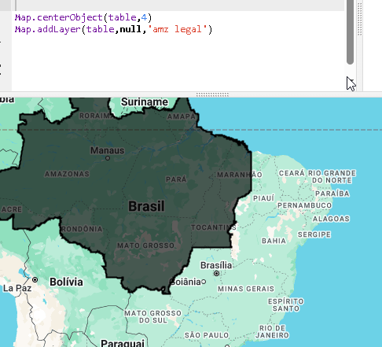
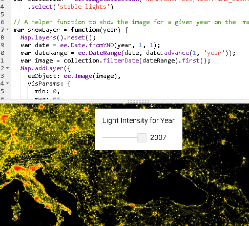
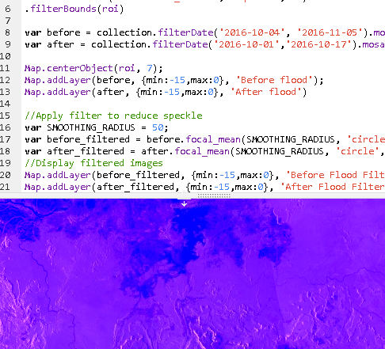
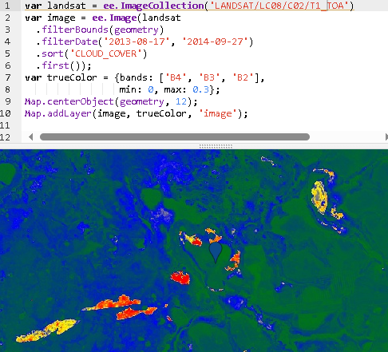

LANDSAT cheias e secasLANDSAT cheias e secasLANDSAT cheias e secasLANDSAT cheias e secasLANDSAT cheias e secasLANDSAT cheias e secasLANDSAT cheias e secasLANDSAT cheias e secasLANDSAT cheias e secasLANDSAT cheias e secasLANDSAT cheias e secasLANDSAT cheias e secasLANDSAT cheias e secasLANDSAT cheias e secasLANDSAT cheias e secasLANDSAT cheias e secasLANDSAT cheias e secasLANDSAT cheias e secasLANDSAT cheias e secasLANDSAT cheias e secasLANDSAT cheias e secasLANDSAT cheias e secasLANDSAT cheias e secasLANDSAT cheias e secasLANDSAT cheias e secasLANDSAT cheias e secasLANDSAT cheias e secasLANDSAT cheias e secasLANDSAT cheias e secasLANDSAT cheias e secasLANDSAT cheias e secasLANDSAT cheias e secasLANDSAT cheias e secasLANDSAT cheias e secasLANDSAT cheias e secasLANDSAT cheias e secasLANDSAT cheias e secasLANDSAT cheias e secas